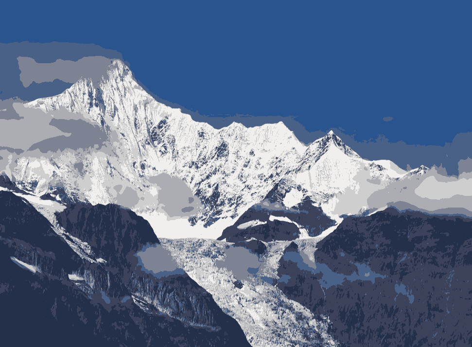
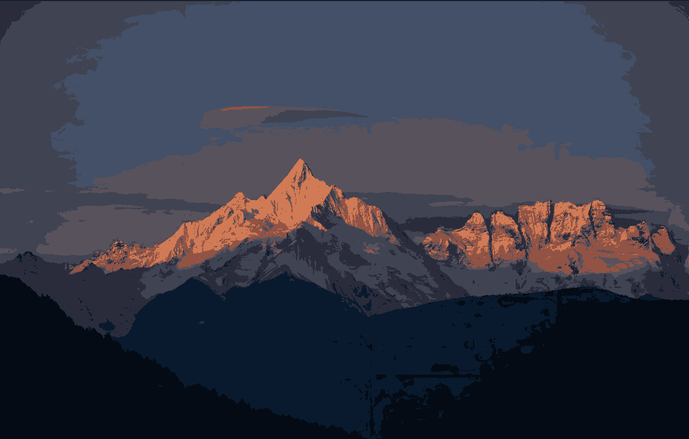
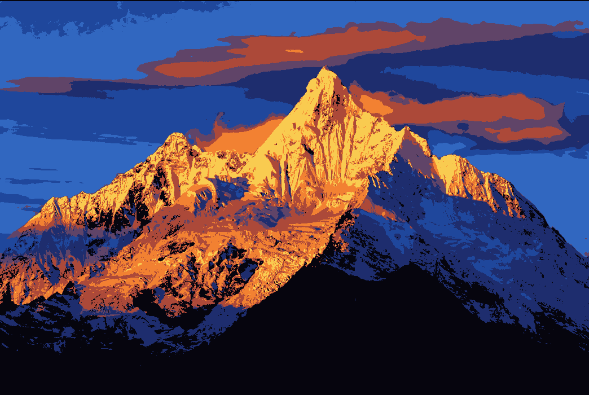

梅里雪山风景图



梅里雪山，属于横断山脉—怒山山脉，位于云南省迪庆藏族自治州德钦县境内。地处滇、川、藏三省结合部，横断山脉中段怒江与澜沧江之间。梅里雪山平均海拔在6000米以上的有十三座山峰，俗称“太子十三峰”。主峰卡瓦格博峰，海拔6740米。
梅里雪山属高原性寒温带山地气候， 梅里雪山是云南生物多样性最丰富的地区之一，也是中国和世界温带地区生物多样性最丰富的地区之一和中国生物多样性保护17个关键区域之一。
梅里雪山景区由五大板块构成：包括位于三江并流云南保护地、被列入世界自然遗产名录的金沙江大湾景区，拍摄梅里雪山全景最佳位置的雾浓顶迎宾台，进梅里雪山或雨崩的重要枢纽的飞来寺观景台，可观神瀑、冰湖的雨崩景区，低纬度热带季风海洋性现代冰川的明永冰川景区。
梅里雪山地区，在地质构造上，处于古地槽三江印支褶皱系弧形转弯受急剧挤压而变窄的部位。在中生代侏罗纪以前，属于古地槽印支褶皱系，是构造上的活动区，当时是汪洋的古地中海深海区。印支—燕山运动期间，古特提斯海洋盆闭合，上升成陆地。